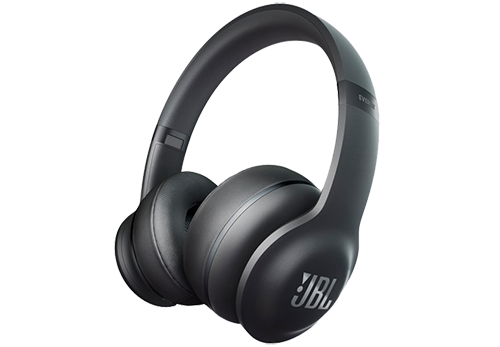

Двадцатые годы. Эра радио. Беспроводное вещание завоёвывает весь земной шар. Если бы Джеймс Лансинг в это время не был увлечен одной из своих самых любимых вещей - громкоговорителем – зарождение Hi – Fi техники может быть так никогда бы и не состоялось. Неудовлетворённость техническим уровнем этого электромеханического устройства определила его многолетнюю привязанность к созданию и производству первоклассных устройств для воспроизведения музыки. До создания в 1929 году фирмы Lansing Manufacturing Company он сотрудничал с предпринимателем из города Лос – Анджелес Кеном Деккером. Открыв небольшой магазин, они начали производство громкоговорителей для стремительно развивающихся радиовещания и звукозаписи.
В 1929 году Джеймс Б. Лансинг совместно с предпринимателем из Лос-Анджелеса Кеном Деккером основывали компанию Lansing Manufacturing Compony, открыли небольшой магазин и начали производство собственных громкоговорителей.
В 1946 году Лансинг основал собственную компанию James B. Lansing Sound Inc., полное название которой позднее сократилось до JBL. Компания приняла ориентацию на разработку акустических систем hi-fi класса для домашнего применения.
Список товаров
Наушники
|

JBL Everest Elite 300
561.29 руб. Купить |

JBL Synchros E40BT Black
168.17 руб. Купить |

JBL Synchros E50BT Black
218.06 руб. Купить |

JBL T280A Black
40.22 руб. Купить |

JBL Synchros E10 Black
52.70 руб. Купить |

JBL E25BT Black
135.80 руб. Купить |
Напольная акустика

JBL S3900
9 603.00 руб. Купить |

JBL Everest DD67000 Black Gloss
94 576.94руб. Купить |

JBL Project K2 S9900 BG
57 674.26руб. Купить |

JBL LS 60
1 486.93руб. Купить |

JBL S4700 WG
15 510.30руб. Купить |

JBL 4367 Studio Monitor WX
14 398.49руб. Купить |
Портативная акустика

JBL Flip 3 Black
168.17руб. Купить |

JBL Charge 2 Plus Black
202.49руб. Купить |

JBL Pulse 2 Black
364.70руб. Купить |
 |
Все товарные знаки являются собственностью соответствующих владельцев. © Plarium, 2014 - Все права защищены